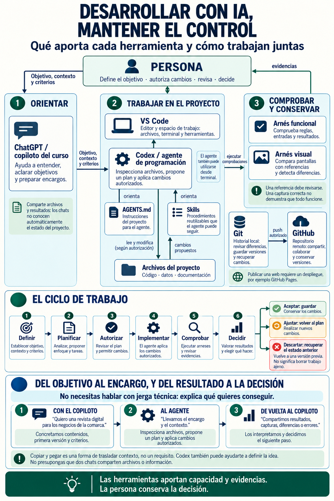

B7 · recurso visual de orientación
Cómo se conectan las herramientas
Una vista general para pasar de una idea a un encargo, trabajar en el proyecto, comprobar resultados y conservar la decisión humana.
Del objetivo al encargo y la decisión


Resumen accesible
La persona mantiene el objetivo, autoriza cambios, revisa evidencias y decide. Las herramientas aportan capacidad, contexto y resultados; no sustituyen ese criterio.
Cómo se reparten las responsabilidades
- Orientar: ChatGPT o el copiloto del curso ayuda a entender la idea, aclarar objetivos, contexto y criterios.
- Trabajar en el proyecto: VS Code reúne archivos, terminal y herramientas. Codex o el agente inspecciona archivos, propone un plan y aplica solo cambios autorizados. `AGENTS.md` aporta instrucciones del proyecto y las skills describen procedimientos reutilizables.
- Comprobar y conservar: los arneses funcionales comprueban reglas y resultados; el arnés visual compara pantallas; Git permite revisar y recuperar cambios; GitHub sirve para compartir y colaborar cuando se publica de forma autorizada.
El ciclo humano de decisión
- Definir objetivo, contexto y criterios.
- Planificar y analizar lo necesario.
- Autorizar el plan y los cambios.
- Implementar el alcance autorizado.
- Comprobar resultados y evidencias.
- Decidir: aceptar y conservar, ajustar y volver al plan, o descartar y recuperar un estado anterior.
Copiar y pegar traslada contexto. No es un requisito y no implica que dos chats compartan automáticamente archivos o información. Si llevas un encargo o un resultado de un chat a otro, comprueba qué has trasladado y qué debe volver a revisarse.
Ejemplo: una revista digital
- Con el copiloto del curso: concretas la idea de una revista digital para los negocios de la comarca, sus contenidos, una primera versión y sus criterios.
- Al agente: llevas el encargo y el contexto del proyecto. El agente inspecciona archivos, propone un plan y aplica únicamente los cambios autorizados.
- De vuelta al copiloto: compartes resultados, capturas, diferencias o errores. Los interpretas y decides el siguiente paso.